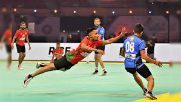

KHO-KHO
Kho kho is a traditional South Asian sport that dates to ancient India.[1][2] It is the second-most popular traditional tag game in the Indian subcontinent after kabaddi.[3] Kho kho is played on a rectangular court with a central lane connecting two poles which are at either end of the court. During the game, nine players from the chasing team (attacking team) are on the field, with eight of them sitting (crouched) in the central lane, while three runners from the defending team run around the court and try to avoid being touched.[2] Each sitting player on the chasing team faces the opposite half of the field that their adjacent teammates are facing.
At any time, one player from the chasing team (the 'active chaser'/'attacker') may run around the court to attempt to tag (touch) members of the defending team, with one point scored per tag, and each tagged defender required to leave the field; however, the active chaser cannot cross the central lane to access the other half of the field, and cannot change direction once they start running toward either pole. The chasing team can get around these restrictions if the active chaser either switches roles with a sitting teammate (by touching them on the back while saying "Kho") who is facing the other half of the court and therefore has access to it, or runs to the area behind either pole and then switches direction/half. Each team has two turns to score and two turns to defend, with each turn lasting nine minutes. The team that scores the most points by the end of the game wins.[4]
The sport is widely played across South Asia, and also has a strong presence in the regions outside South Asia, such as South Africa and England. It is played most often by school children, and is also a competitive sport. The first league of its kind called Ultimate Kho Kho was unveiled in India in August 2022.

History
A depiction of an Indian chariot from ancient times. Kho-kho was first played on chariot before transitioning to its modern form.
Kho kho has been played since at least the fourth century BC. Certain aspects of kho kho's gameplay may have been mentioned in the Mahabharata. In pre-modern times, it is believed that a version of kho kho known as Rathera was played on chariots (ratha meaning "chariot" in Sanskrit). The game was also known in ancient times as "Kho-dhwani krida", translating as "a game where the sound 'kho' is made".
The modern form of the game was standardised in 1914, with its rules and formalised structure being given by Pune's Deccan Gymkhana club. Kho-kho was demonstrated at the 1936 Berlin Olympics alongside other traditional Indian games. It is now a medal sport in the South Asian Games, having first been played in the 2016 edition. Other international kho kho competitions, such as the Asian Kho Kho Championship, have been held with the collaboration of organisations such as the Kho Kho Federation of India and the Kho Kho Federation of England,[11][12] with the sport having been spread overseas by the South Asian diaspora.[13] Within South Asia, it has been accepted into major sports events such as Khelo India and the National Games of India, with its growth supported by its simplicity and affordability.
Kho kho's rules and appearance have changed over time; it was generally played on muddy surfaces in the past, but today is often professionally played on matted surfaces. This transition has altered the game, as more energy is required to run on a matted surface, with injuries also increasing to some extent. Various other aspects of the game, such as the poles and the dimensions of the playing field, were also added over time.

In July 2022, the player draft for Ultimate Kho Kho was completed, which is a six-team franchise-based Indian Kho Kho tournament. Its inaugural season ran from August 14 to September 4, 2022.
Kho Kho Federation of India conducts the National Championships for men, women and juniors every year and the latest edition, the 56 edition, 2024 National kho kho championship (India) concluded in Delhi on 1 April 2024 with Maharashtra winning both the men's and women's National titles